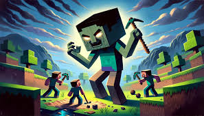

Bienvenue dans la premiere théorie
Redirection dans la page théorique
La théorie selon laquelle le joueur serait le méchant dans Minecraft gagne en crédibilité lorsque l’on observe les actions typiques des joueurs. Ils modifient radicalement les écosystèmes pour construire des structures, abattent des animaux, exploitent les ressources souterraines et affrontent diverses créatures pour acquérir de l’expérience et des matériaux. Ces comportements peuvent facilement être interprétés comme destructeurs, plaçant ainsi Steve et ses semblables dans le rôle des antagonistes de l’univers Minecraft.
Premierement: Le joueur envahit un monde paisible:
L'un des éléments centraux de cette théorie est que, dès le début, le joueur entre dans un monde qui, à première vue, semble paisible et naturel. Les animaux se déplacent, les arbres poussent, et l'équilibre de la nature est stable. Le joueur, par contre, commence à perturber cet équilibre : il coupe des arbres, tue des animaux, et creuse profondément sous terre, perturbant l'écosystème. La question se pose alors : est-ce vraiment lui le "héros" ou l'élément perturbateur qui détruit cet environnement ?
Deuxiement: Les créatures hostiles sont des défenseurs du monde:
Selon cette perspective, les créatures hostiles comme les zombies, les squelettes, ou même les Endermen, ne seraient pas des ennemis à abattre, mais plutôt des défenseurs du monde. Ces créatures, souvent interprétées comme des menaces à éliminer, pourraient être vues comme les derniers remparts d'un monde qui tente de repousser l'intrusion du joueur. Les monstres ne cherchent peut-être pas à attaquer par malice, mais plutôt pour défendre l'équilibre de leur habitat contre un intrus qui détruit tout sur son passage.